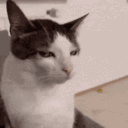

Kelas X - Semester 1 | 110 soal pilihan ganda
Materi: Malware & Pemilahan Data, Von Neumann & IPO, Sorting-Stack-Queue, Analisis & Validasi Data, Sistem Komputer. Kamera harus aktif selama ujian.
Token diberikan oleh guru. Setelah benar, kamera akan aktif dan ujian dimulai.
Setelah PDF terunduh, klik tombol di bawah lalu upload file PDF-nya ke folder pengumpulan.
Masukkan password guru untuk membuka pemantauan.
Bagikan token ke siswa, lalu pantau progres mereka secara langsung.
